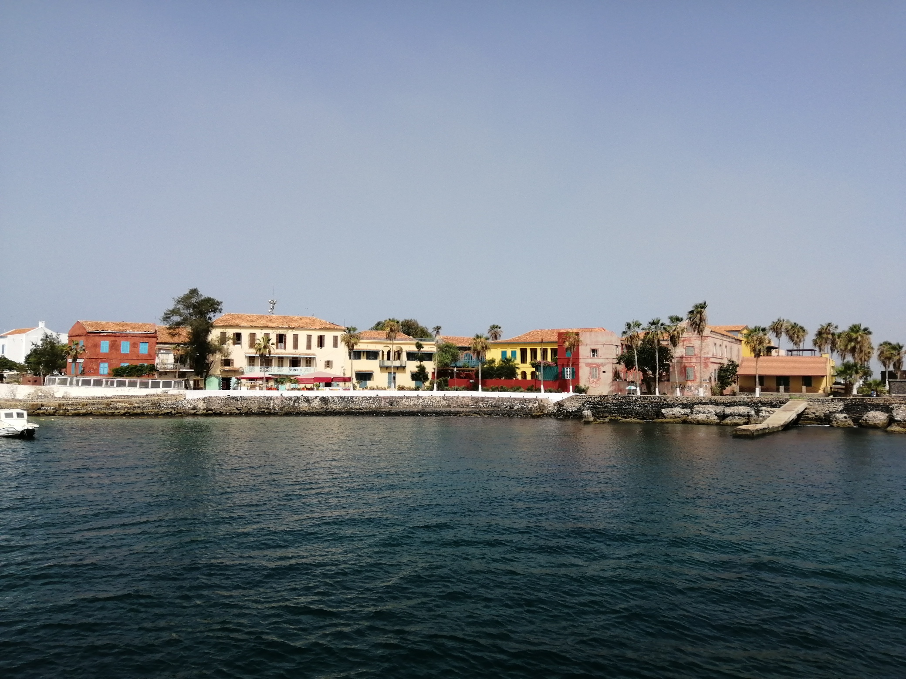
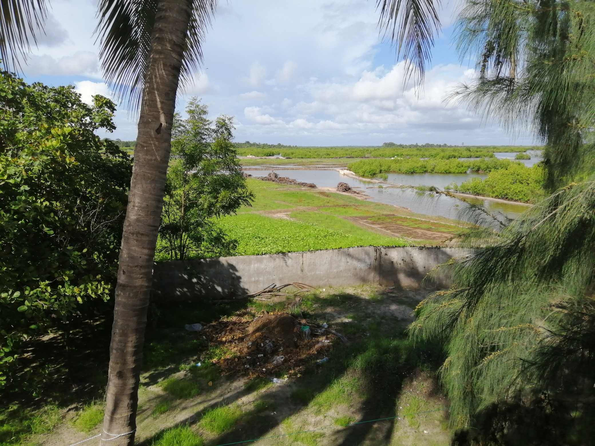

Bienvenu sur mon blog !! Je m'appelle Alice et suis passionnée par les voyages et l'Afrique. Après être allée vivre quelques mois au Sénégal, j'ai crée ce blog pour partager ma passion pour ce pays. Ici, tu trouveras les endroits incontournables à visiter, les classiques de la gastronomie Sénégalaise et ses recettes, et des actus sur le pays.
Les endroits incontournables

Dakar & Gorée

Sine Saloum

Casamance